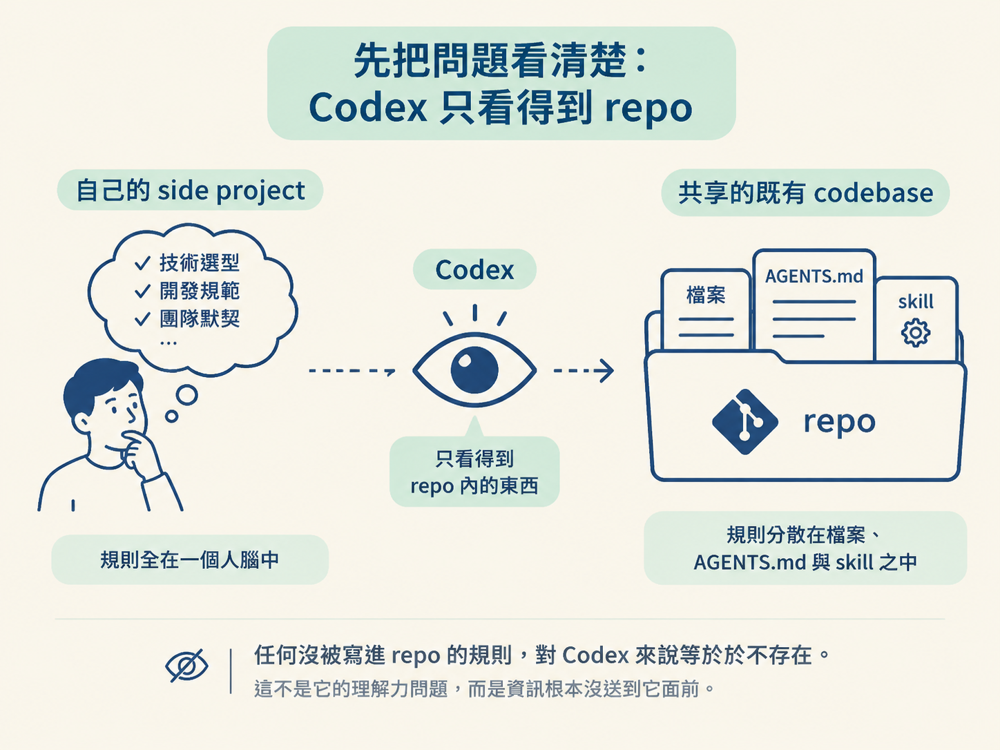
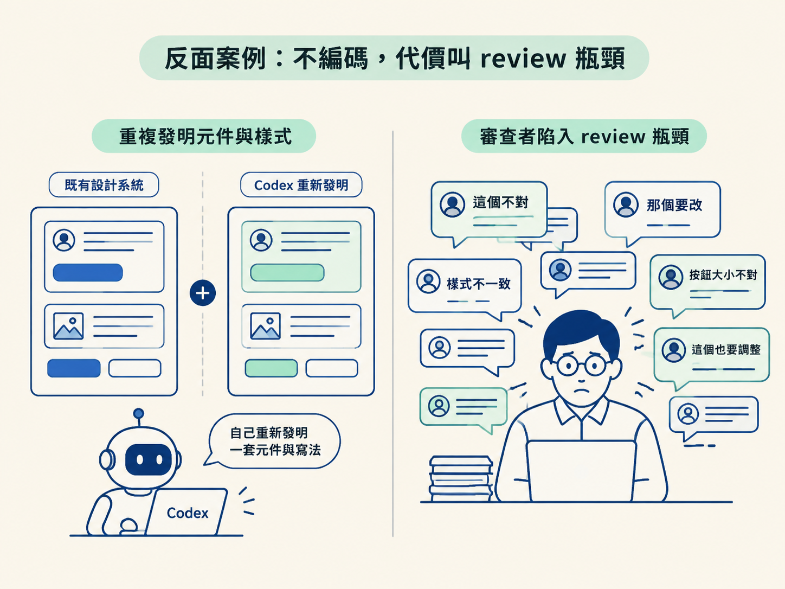

你走進一個陌生的 codebase，想加一個面板。第一個反應通常是把腦中所有資訊倒進 prompt：圖表用 Recharts、icon 用 Lucide、卡片套 analytics-card 這個 class、最後跑 pnpm run build。寫完像一份規格書，很長，而且十之八九還是漏掉某些只有原作者才知道的默契。
這節要講的是反過來的做法。在成熟的既有 codebase 裡，這些話你一句都不該說，你只要說「我想要什麼」，剩下的「怎麼做」由 repo 自己回答。聽起來像偷懶，但它其實是一份明確的分工契約，而且是唯一能讓你不必先成為 repo 專家就能動手的辦法。
新的 side project 是空地蓋房子，你想怎麼蓋就怎麼蓋，規則全在你腦子裡。既有 codebase 完全不一樣：它不是你的，而且通常不只你一個人在改。
| 你自己的 side project | 共享的既有 codebase | |
|---|---|---|
| 所有權 | 只有你一個人 | 你和其他人一起 |
| context 在哪 | 全部在你腦中 | 分散在每個人腦中，你只握有一部分 |
| Codex 看得到什麼 | 整份程式碼（規則你當場說） | 只有 repo 裡被寫下來的東西 |
| 你的 prompt 要說 | 要什麼，加上怎麼做 | 只要說要什麼 |
關鍵在最後兩列。Codex 的眼睛就是 repo，它不會「大概知道你們都用 Recharts」，只會照 repo 裡找得到的線索決定做法；線索找不到，它就自己發明一套。所以任何沒被寫進 repo 的規則，對 Codex 來說等於不存在。這不是它的理解力問題，是資訊根本沒送到它面前。

課程講者 Katia 把這份契約講得很白：
「你不應該需要特別交代什麼。你只要說你想做什麼，然後 repo 本身應該要持有全部的 context。」
展開來看，就是兩邊各管一半。你負責「要什麼」：描述使用者拿到的價值，例如新增一個顯示成長最快國家的面板。repo 負責「怎麼做」：卡片用哪個 primitive、圖表用哪個 wrapper、資料要從被 region 篩選過的 cities> 取。這些規矩寫在 repo 裡，Codex 自己會讀到。
OpenAI 內部就是這樣運作的。在那裡每個人都會貢獻程式碼：PM、設計師、專案經理、成長團隊，有想法就直接在產品裡做出原型，工程師負責審查、確認東西沒問題。之所以辦得到，是因為 repo 的知識被編碼進 repo，變成 Codex 找得到的 context；有了這層，非工程師也能在不破壞系統的前提下加東西。
講者舉過自家開發者網站的例子。一開始 repo 裡沒編碼多少東西，很多規則只活在大家腦子裡。有位設計師想加一個功能，送出的 PR 讓講者花在審查上的時間，比她自己從零重做一遍還久。
問題出在 Codex 的行為上：那位設計師只知道「要什麼」，repo 裡又沒有規則可循，於是 Codex 假裝 repo 的其他部分不存在，自己重新發明了一套元件與寫法。每個人都能貢獻本來是好事，但審查的人得一句一句指出「這個不對、那個要改」，反而製造出更多工作。

這裡的歸因很容易搞錯。這個瓶頸不該算在貢獻者頭上，他只是不知道那些沒被寫下來的規則。真正該負責的是 repo：你的知識、以及你「為什麼覺得這個 PR 不對」的理由，本來就該寫在 repo 裡。工具是現成的，就是前面學過的 skills 與 AGENTS.md；再搭配可重用的 helper 和清楚的設計系統，Codex 才會沿用既有做法，而不是每次重新造輪子。
真實情境就是剛才那種「外人想加功能」。操作方式是把功能需求寫清楚，其餘一個字都不指定。課程示範裡送出的 prompt 完全沒提設計系統、也沒點名任何套件，原文是這樣：
Can you add a “Where activity is changing” section to User Insights?
It should update with the existing region and 7-day or 28-day controls. Show the fastest-growing country, a small activity trend, and a short list of countries gaining or losing momentum. When someone selects a country, highlight it on the globe.
Before building it, look through the project and reuse the existing state, data helpers, components, styles, and interaction patterns. Keep the globe as the main focus, use the existing fictional data, and check the result on mobile, tablet, and desktop.拆開來看，它說的全是「要什麼」：加一個新區塊、跟既有的 region 與 7 天／28 天控制項連動、顯示成長最快的國家、選國家時在地球上高亮。唯一碰到「怎麼做」的，是那句很一般的「先看過專案，重用既有的 state、data helpers、components、styles 與互動模式」。注意這是把決定權交還給 repo，而不是自己指定元件。一個完全不熟悉這個 repo 的 PM，也能寫出幾乎一模一樣的 prompt。
想自己重現一次很簡單：拿一段你正在做的功能需求，把裡面所有「用哪個套件、哪個 class、跑哪個指令」的字眼刪掉，只留下使用者看得到的行為，再補一句「先看過專案、沿用既有的做法」。這段刪減本身就是那份契約的練習。
這節和前一節是同一枚硬幣的兩面。前面講的是「把知識寫進版本庫」，站在維護 repo 的那一側；這裡講的是站在貢獻者的這一側：當知識已經被寫進 repo，你的 prompt 就只需要說要什麼。兩邊對上了，Codex 拿到的訊號才完整。
所以判斷準則只有一句：prompt 裡出現「怎麼做」的細節，通常代表 repo 裡少了一條規則。看到自己寫下 analytics-card、Recharts、某個 wrapper 這種字眼，與其繼續寫進 prompt，不如回去把它寫進 AGENTS.md 或專案 skill。
契約懂了，下一節就動手：把 user-insights dashboard 跑起來，用 Codex 看過它的結構，然後送出一段像上面那樣、只講結果的功能 prompt。